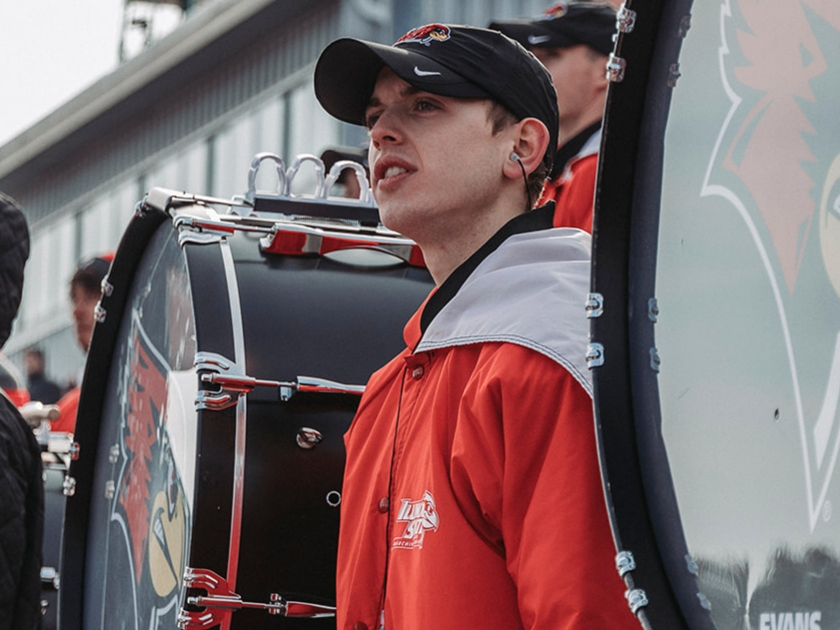

Ben Maier is a sophomore Arts Technology Major and Music Minor at Illinois State University. He enjoys filming things and editing videos, as well as running his YouTube channel and uploading videos frequently. He is currently a member of the Illinois State Univeristy Big Red Marching Machine and Pusle Drumline.

Check out the social media pages linked below to find out even more about Ben!